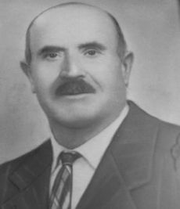

MECACCI (1943-1955); mezzadri; Quercegrossa; dalla Torre di Passeggeri.
Eufrosino Mecacci fu il padre di Ferdinando, Piero ed Ezio che nel 1943 fecero entratura al secondo podere di Casagrande in Quercegrossa di proprietà Mori. Agli inizi del Novecento i Mecacci vivevano a S. Giusto in Salcio da dove si spostarono intorno al 1910 per il podere Campomaggio di S. Maria Novella. A quella data la famiglia di Eufrosino si componeva di nove persone: Lui, nato intorno al 1870 da Antonio e Maria Minghi, la moglie Adele Vettori di Pietro e i sette figli di cui cinque femmine con la maggiore Ersilia di 19 anni, Assunta di 17, Giulia di 11, Cesira di 10 e Marianna di 8. Il maggiore tra i maschi e futuro capoccio era Ferdinando detto
"Nando" che risulta nato a S. Donato in Poggio il 19 febbraio 1901 e coniugato verso il 1920 a S. Maria Novella con Giulia Vanni nata a Panzano il 12 aprile 1899. L'altro figlio più piccolo era Pietro detto
“Piero” di 5 anni, nato il 18 luglio 1905. A questa discreta lista manca Ezio che nascerà in quella parrocchia, ma battezzato a Monterinaldi il 20 agosto 1913. Con la perdita dei genitori e di una sorella durante l'epidemia di asiatica del 1918/19, la famiglia alla guida del giovane Nando lascia Campomaggio e, dopo il suo ricordato matrimonio del 1920, iniziano le nascite dei suoi figli. Infatti, dopo Maria nel 1923 vediamo che la secondogenita Fedora è nata a Bugialla il 1 maggio 1924 e battezzata a Selvole mentre Ademo il 14 aprile 1924 nasce all'ospedale di Siena quando già dimorano alla Torre di Vagliagli. Alla Torre vedrà la luce anche Vasco il 30 maggio 1929, lo stesso anno del matrimonio di Piero sposo a Pievasciata il 9 febbraio 1929 con Carlotta Maremmi, nata a Vagliagli il 12 aprile 1902. La ventennale permanenza alla Torre ebbe fine nel 1942 quando i Mecacci, anche allora nove persone compresi i quattro figli di Nando, si trasferirono a Quercegrossa e vi sarebbero rimasti per tredici anni vivendo al centro del paese un difficile periodo sia per la guerra che per la mezzadria. Il 16 aprile del 1944, in piena guerra, si sposa Ezio a Fonterutoli con Faustina dei Bonechi del Giardino e il 5 agosto 1945 nasce Bruno. Successivamente Maria nel 1949 si sistema a S. Fedele sposando Danilo Zambli l’8 gennaio e la sorella Fedora sposa Mario il 19 aprile 1952 nella doppio matrimonio dei fratelli Valiani di Castagnoli e torna nelle case di Giotto. Con questo matrimonio si chiude la nota delle registrazioni dei Mecacci a Quercegrossa perché tre anni più tardi, nel febbraio 1955, si trasferiscono a Belriguardo continuando ancora quattro anni nella mezzadria per poi chiudere con essa e impiegarsi in occupazioni diverse.
MELI (1895 - 1950 ca.); mezzadri/braccianti; Magione/Olmicino/Leccino.
Movimentata e piena di eventi non sempre felici la storia familiare dei Meli entrati al podere della Magione il 3 marzo 1895. Una storia di mezzo secolo che terminerà ai primi anni Cinquanta con la morte in commenda di Dionisio, l'ultimo Meli di Quercegrossa. Capeggiava una famiglia di tutto rispetto con i suoi diciassette componenti Serafino del fu Domenico di 55 anni, vedovo di Adele Marziali, che con i figli Domenico, Giulio (1867), Nisco (1869), Olinto (1871), Fortunato (1874) e Dionisio formavano una notevole forza lavoro. Dei fratelli solo Domenico aveva preso moglie. Si era sposato con Ersilia Semplici che gli aveva dato due figli Adele (1891) e Paolino (1894). Ma la metà della famiglia apparteneva al nipote Cesare il figlio del fu Niccolò, un fratello del capoccio Serafino. Con la moglie Clementina Chiantini aveva messo al mondo dal 1883 al 1894 ben sei figlioli: Maria, Giulia, Annunziata, Niccolò, Giuseppe e Luigi. Non fecero in tempo a arrivare alla Magione che il 18 ottobre Cesare moriva a 36 anni. L'anno successivo ancora un lutto: Domenico a 38 anni. La moglie Ersilia, dopo la sua morte, presi i due figli se ne deve essere tornata presso la sua famiglia. In quello stesso 1897 era stato accolto alla Magione un altro fratello di Serafino, Ferdinando, accompagnato dalla moglie Assunta Manenti e dal figlio Angelo di 25 anni. Negli anni seguenti, prima della Grande guerra, si registrano diversi matrimoni e ancora decessi di uomini nel pieno delle forze: morirono Angelo nel 1903 a 32 anni e Olinto nel 1913 di 39 anni. Intanto si era maritata Annunziata nel 1909 con un Manenti del Poggiolo mentre Niccolò aveva preso Elisa o Luisa Carrai a Pievasciata nel 1915 e Dionisio aveva sposato Cesira Fantacci. Giuseppe, il fratello di Niccolò, sposerà anch'esso una Carrai, Eugenia, a Pievasciata il 24 aprile 1920. Lo scoppio della Prima guerra mondiale portò un'altro lutto in casa Meli: Niccolò moriva nel 1917 per ferite riportate in combattimento. Lasciava la moglie e il figlio Cesare di un anno. Luisa Carrai non sopravvisse molto al marito: lo seguì nel 1921 all'età di 26 anni. Nel 1918 anche lo zio Ferdinando era passato all'altro mondo e la mortalità infantile colpiva Giuseppe che perdeva Ezio (1921) ed Elio (1923). Quasi scomparsa del tutto la generazione che era tornata alla Magione, la famiglia si ritrovò assai ridotta di numero e di forza. Il capoccio era diventato Giulio, ma la forza della famiglia era riposta in Giuseppe, Dionisio e Luigi.
Olmicino
Questo lento ridimensionamento delle braccia portò alla decisione di trasferirsi nell'anno 1922 al nuovo podere dell'Olmicino, molto più confacente alla nuova situazione. Qui Luigi si sposò nel 1923 con Pia Manganelli, ma a S. Leonino due anni prima il 10 febbraio del 1921 era stata battezzata Ida figlia di Luigi Meli e di Elisabetta Carrai. Ancora una Carrai nei Meli, ma chi sia stata è incerto. Forse la vedova di Niccolò o un'altra Carrai prima moglie di Luigi? Chissà? Non rimasero molto tempo nel nuovo podere. Solo cinque anni e nel febbraio del 1927 partirono lasciando il posto agli entranti Papi. Dove sia emigrato Luigi non lo sappiamo. Ritroviamo però Giulio nel 1933 che si sposta da un'abitazione del Comune di Castelnuovo a S. Stefano di Basciano con la moglie Genoveffa Filippini e due figli, Lida e Mario.
Dionisio
Dionisio fu l’unico Meli rimasto a Quercegrossa nel 1927 e dall'Olmicino passò nelle case Mencherini al Leccino Nuovo con la moglie Cesira e la figlia Nella e si ridusse a salariato. La sua nuova condizione durò circa venticinque anni. Vide il matrimonio di Nella nel 1936 con Corrado Forni, la morte di Cesira e poi vecchio impotente venne ricoverato in Commenda dove morì negli anni Cinquanta.
MENCHERINI (1904 - Residenti); calzolai; Leccino Nuovo.

Nel 1904 il calzolaio Oreste Mencherini
(nella foto)tornava nella sua nuova abitazione a Quercegrossa costruita con le sue mani dopo aver acquistato la terra dal Pallini. La casa, ampliata successivamente, prese il nome di Leccino Nuovo e Oreste vi entrò con la moglie Caterina Manganelli di Sabbatino e gli anziani genitori Bernardo di 70 anni e Amabile Bruni o Brenci. Nato il 5 maggio del 1879 Oreste si era sposato a Lecchi poco prima di tornare a Quercegrossa e qui cominciarono a nascere i suoi figli. Il primo, chiamato Fortunato nato il 22 febbraio 1905 sopravvisse solo poche ore. Fu poi la volta di Orfeo, il popolare
"Feo", nato il 23 marzo 1908 e battezzato a Vagliagli. Arrivò poi Otello nel 1914 e Odo nel 1916 mentre nel 1919 si registra la morte di Ordo all'età di un anno. Questa originale maniera di battezzare i nomi dei maschi con l'iniziale "O" proseguì con Orlando detto
"Landino" nel 1921 e si estese a Olga qualche anno dopo. Mentre a Oreste nascevano i figli, se ne andarono i suoi genitori: Amabile morì il 4 novembre 1911 e Bernardo l'8 agosto 1913. Inoltre, alle già ricordate morti infantili si aggiunsero quelle di Eleonora, chiamata Norina, l'8 marzo 1922 all'età di 9 anni, e quella, ancor viva nella memoria degli anziani, di Odo all'età di 18 anni, il 15 marzo 1934. Famiglia di calzolai, anche i giovani Mencherini si adattarono a questa professione che esercitarono sia per privati che per lo Stato divenendo calzolai dell'Esercito Italiano negli anni antecedenti la Seconda guerra mondiale. Per questo Oreste, Orfeo e Landino si trasferirono per lunghi periodi a Boves di Cuneo, e ad Ancona dopo la guerra con Orfeo al servizio dell'Arma dei Carabinieri.
Nei primi anni Trenta Olga si sposò e tornò a Fonterutoli in casa del marito Dario Tanzini. Ebbe due figli Carlo e Margherita. Carlo entrerà in Marina per rimanervi e la mamma morì vedova a La Spezia nel 2004.
Nel 1936 la famiglia si compone di cinque persone: Oreste, la moglie e i tre figli maschi. Se Orfeo e Orlando rimasero celibi, Otello si sposò nel gennaio 1941 con Maria Cellesi abitante a Istieto in Valli e si trasferì per alcuni anni in casa della moglie prima di rientrare a Quercia e aprire la sua bottega in Siena divenendo nello stesso tempo
"il Mencherini" cioè il tassista di Quercia. Il 15 gennaio 1944 nasceva Giuliana a Siena, l'unica erede della famiglia.
Subito dopo guerra, nel 1945, anche il vecchio Oreste cessò di vivere a Boves e venne sepolto al Laterino. Era già vedovo di Caterina da alcuni anni. Da ora in poi la vita familiare dei Mencherini procede all'insegna del lavoro e anche Orlando rientrato a Quercia aprirà verso il 1950 la sua bottega di calzolaio al Leccino. Passano gli anni, anzi, i decenni, e anche per i fratelli Orfeo e Otello venne l'ora, e per entrambi all'età di 65 anni. Il primo fu Orfeo deceduto il 18 febbraio 1973 poi Otello dopo sei anni il 5 marzo 1979. Oggi, al Leccino Nuovo vivono la loro sofferta vecchiaia Landino e Maria Cellesi, ultimi sopravvissuti della loro generazione.
Caterina Manganelli, moglie di Oreste.
Da sinistra: Otello, Orfeo e Orlando Mencherini.
Maria Cellesi in Mencherini.